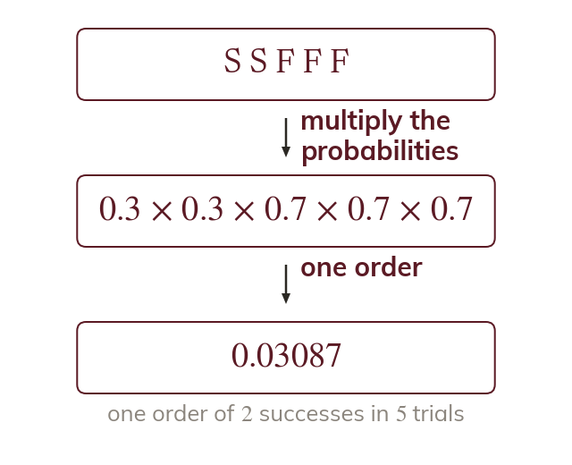
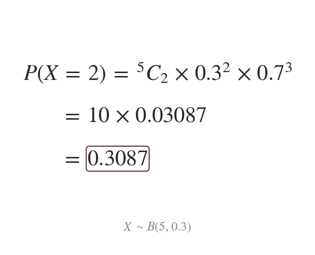
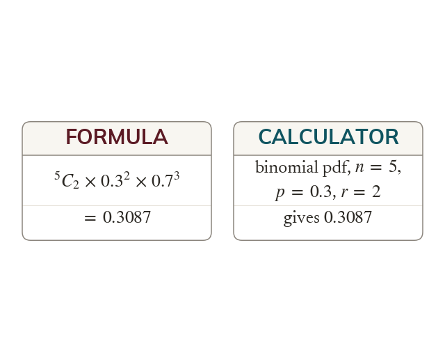
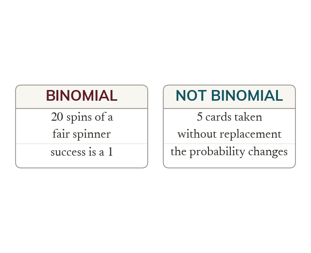
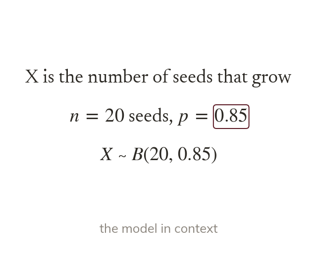
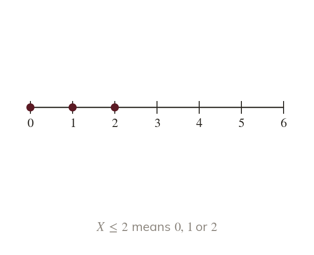

One order
For the order SSFFF has probability
Every order with successes and failures has this same probability.
Many situations count successes in a fixed number of independent trials, and the binomial distribution gives every one of their probabilities from one formula. The next lesson adds these probabilities up quickly with cumulative probabilities.
Work down the page at your own pace. Write every answer in your book first, then click to check it.
Read each card, then follow the worked examples one step at a time.

For the order SSFFF has probability
Every order with successes and failures has this same probability.

The successes can sit in different places among the trials. So

For ~ = nCr × The binomial pdf function on a calculator gives the same value from and
Pick an answer. If it's wrong, the feedback tells you which mistake it was.
Write the blanks in your book first, then tap each one to check.
Read each card, then follow the worked examples one step at a time.

A binomial model needs a fixed number of trials, two outcomes, independent trials and the same probability of success. Write each condition in the context of the question.

Define X in words, then give n and p. For seeds that each grow with probability independently, X ~

each found from the formula. Do not leave out
Pick an answer. If it's wrong, the feedback tells you which mistake it was.
Write the blanks in your book first, then tap each one to check.
Finished? Next lesson: S6.3 Cumulative Probabilities.
For each skill, tap the one that is true for you today. Your Revise pages start with anything you mark Not yet.
Your ratings are saved on this device only.
Log in, then search for a code to practise that skill.